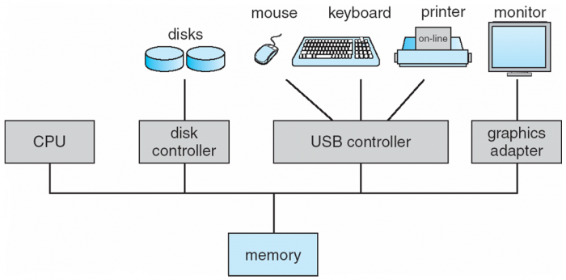
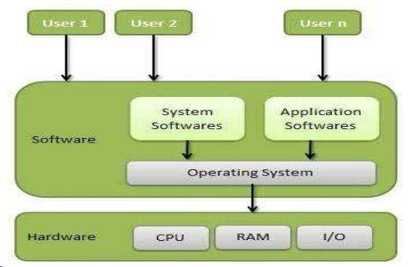
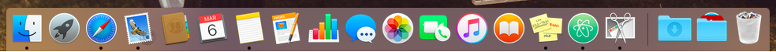
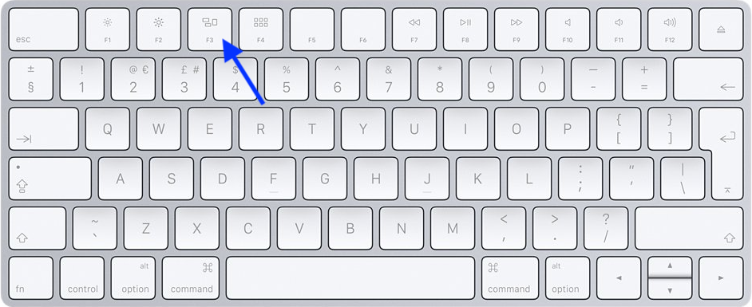
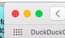
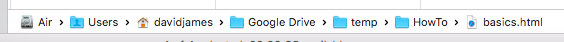
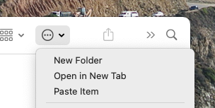
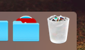

There are a few basic operations that you need to know on a computer and they are pretty much the same on any operating system, even if the details are somewhat different. This 'how to' covers some of those basic operations. We will cover:
It is useful to start by giving a simplified view of what actually makes up a computer. The iMac, the MacBook and even the iPad all have the components shown in the diagram. There is:
An operating system (OS) is the low-level software that allows us to do things on a computer. When you start a computer the OS is copied from the disk store into the main memory and starts to run. The iMac and MacBook use MacOS and the iPad uses IOS, although most PCs use Microsoft Windows. As well as Windows, I more normally run a Linux OS on the old laptop.
It is difficult to find a simple diagram that shows the structure of an operating system, probably because they are quite complicated. As you can see from this diagram, the OS contains software that interacts with the hardware (reads mouse clicks, sends output to the screen, reads from and writes to the disk), runs system software such as the file manager and runs application software when asked to do so. Most of the time the OS is waiting to receive input from one of the connected devices and then passes that input on to the application to which it applies. Applications are also known as Apps, tasks or otherwise as programs (note that this is the accepted spelling for a computer program). So if, for example, you are running Pages and click on the File menu, then the OS will pass that 'click' to Pages and that will drop down the File menu options.
In the diagram you can see several users. All PC, tablet and phone operating systems are multi-tasking, in other words, they can run several applications at the same time (in the image below of a MacOS Dock, those icons with a dot under them are running applications), but of the popular OS only MacOS and Linux are multi-user. So on Windows, for example, only one user can be logged in at any one time.
If you want to know more then BBC Bitesize on Operating Systems is a good place to look.
Although you can have several applications running at the same time, you can only interact with one of them. For this to happen, that application needs to have what is called 'focus'. When you click within an application window it is brought to the front and the top bar of the window will be distinct, rather than muted. Also, in MacOS the menu will be changed to that of the application. So even if you click on a button of an application that does not have focus, the button will not do anything, because all you have done is brought that application to the front and you will need to click the button again to get it to work.
Of course, when you click in an application window and bring it to the front, it might hide other, smaller windows. To see all the windows you can press the F3 key and then click on the window that you want to bring to the front. By holding down the mouse button with the cursor on the top bar of the window, you can move the window around the screen. In this way you can see parts of other windows that may be open.
Clicking on the yellow button on the left of the top bar will minimise the window down on to the dock. Clicking the icon on the dock will bring it back. The green button will make the application window fill the screen; the top bar disappears, but moving the cursor up to the very top will make the bar reappear and you can click the green button again to cancel full screen view. The red button will close the window, but may not close the application. However, the 'Application name' menu always has a 'Quit Application' option at the bottom.
Everything stored on the computer is in a file; application program files, image files, text files, data files. And all these files are stored on the hard drive in folders. So all the applications are stored in the Applications folder. You view folders and their contents in the Finder application. You will soon notice that a folder can contain more folders; as deep as you want. You can open a folder by double clicking on it. By double clicking on a file you will start the default application for that file type and the application will open the file. Towards the bottom of the Finder window you will see the path to the file that you have selected.
Within any folder you can create a new folder by clicking on the options button and selecting 'New Folder'. You can then rename it. In fact you can rename a folder or a file at any time by clicking on the name. The background colour will change and you can type in the new name, followed by the return key (or clicking elsewhere).
When you open, say, a Pages file then the contents of that file are copied from the hard drive to the main memory. You edit the file in Pages and then when you save it (File:Save) it is written back to the hard drive. If you try to close the application before saving the file you will usually get a warning, asking if you want to save the file. If you want to keep the original version of the file then you can either select 'File:Save as' from the menu and give the new version a new name, or in Finder Control click on the file name and select Duplicate, then rename the new file and open it in the default application.
Note that the Desktop is just another folder that you can see in Finder. You can move files between folder (including to and from the Desktop) by dragging the file name or icon from one place to another. It is often easier to drag a file from a folder in Finder on to the Desktop, select the folder in Finder where you want to put the file and then drag it from the Desktop into that folder.
The bin (Trash) is also just another folder, although it is not usually visible in Finder. However, if you click on the icon on the Dock it will open a Finder window showing what is in the bin. So you delete a file simply by dragging it from a Finder window or the Desktop to the bin icon. This folder, however, is slightly different in that files you put into the bin are permanently deleted after 30 days. But it does mean that if you delete a file by mistake then you can open the Trash folder in Finder and drag the file out.
If you double click on a file name in Finder, or hold down the control key, click on the file name and then select Open, the file will be opened using the default application. So if it is a Pages file (xxx.pages) then Pages will open, displaying the document. However, applications such as Pages, Numbers and TextEdit allow you to create a new document. In fact most applications have a File|New menu item. When you come to save the document you will be asked to give it a name and tell the application where you want to save it, in other words, in which folder.
If you already have a document open in an application then you can use File|New to create a new one. However, if you simply open the application it will ask what you want to do, sometimes giving you a choice of options. Popular applications are on the Dock, otherwise open the Application list from the Dock and choose the one you want from the list.
© David James 2021 Last updated: 12th March 2021